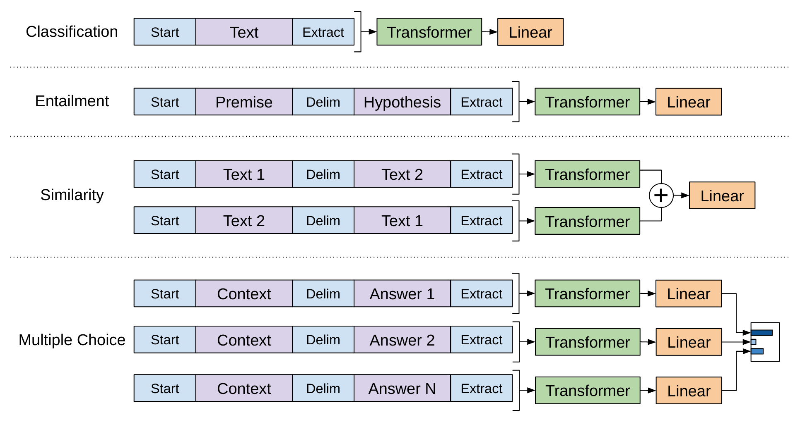
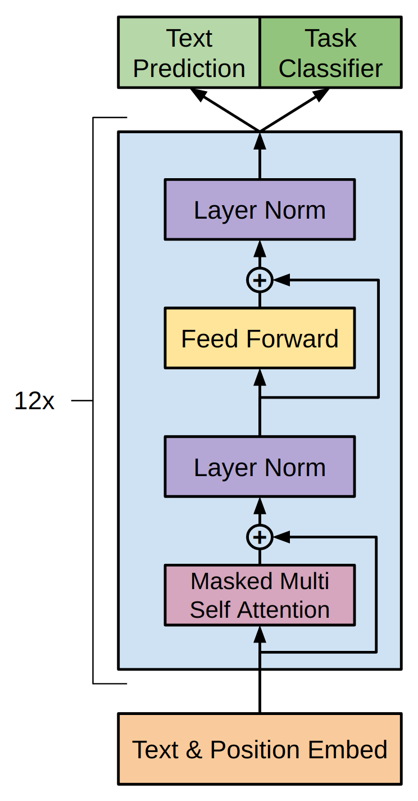
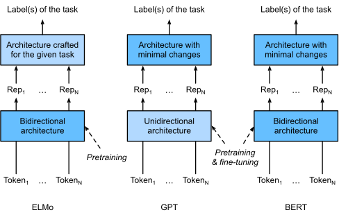

from transformers import OpenAIGPTTokenizer, OpenAIGPTForSequenceClassification
from transformers import Trainer, TrainingArguments
import torch
# 加载预训练的 GPT-1 模型和分词器
tokenizer = OpenAIGPTTokenizer.from_pretrained("openai-gpt")
model = OpenAIGPTForSequenceClassification.from_pretrained(
"openai-gpt",
num_labels=2 # 二分类：正面/负面
)
# 分词器设置
tokenizer.pad_token = tokenizer.eos_token
model.config.pad_token_id = tokenizer.eos_token_id
# 准备数据
texts = ["This movie is fantastic!", "Terrible waste of time."]
labels = [1, 0] # 正面, 负面
encodings = tokenizer(
texts,
padding=True,
truncation=True,
max_length=512,
return_tensors="pt"
)
# 创建 Dataset
class SentimentDataset(torch.utils.data.Dataset):
def __init__(self, encodings, labels):
self.encodings = encodings
self.labels = labels
def __getitem__(self, idx):
item = {k: v[idx] for k, v in self.encodings.items()}
item["labels"] = torch.tensor(self.labels[idx])
return item
def __len__(self):
return len(self.labels)
dataset = SentimentDataset(encodings, labels)
# 微调配置
# 注意：学习率比预训练时低很多（6.25e-5 vs 2.5e-4）
training_args = TrainingArguments(
output_dir="./gpt-sentiment",
num_train_epochs=3,
per_device_train_batch_size=32,
learning_rate=6.25e-5, # GPT 微调推荐的学习率
weight_decay=0.01,
warmup_steps=100,
logging_steps=10,
)
# 训练
trainer = Trainer(
model=model,
args=training_args,
train_dataset=dataset,
)
trainer.train()第12章：GPT——自回归预训练路线
Improving Language Understanding by Generative Pre-Training
NLP
Deep Learning
Pre-training
GPT
Transformer
GPT：第一个将Transformer用于大规模语言模型预训练的工作。通过自回归语言建模预训练Transformer Decoder，再在下游任务上微调全部参数，确立了’预训练+微调’的现代NLP范式。
核心问题：能否用Transformer替代LSTM进行语言模型预训练，并通过微调整个模型（而非仅提取特征）来高效迁移到下游任务？
历史坐标：2018年6月 | Radford et al. “Improving Language Understanding by Generative Pre-Training” | OpenAI
Tip本章参考来源
0.1 论文
- Radford et al. (2018) “Improving Language Understanding by Generative Pre-Training” — 参考了 Section 3（框架描述）、Section 4（实验）、Table 1-5、Figure 1-2
- Peters et al. (2018) “Deep contextualized word representations” (ELMo) — 参考了与GPT的对比分析
- Howard & Ruder (2018) “Universal Language Model Fine-tuning for Text Classification” (ULMFiT) — 参考了微调策略的对比
0.2 教材
- D2L Section 15.8-15.10 (BERT) — 参考了ELMo/GPT/BERT对比图和教学组织方式
- SLP3 Chapter 10-11 — 参考了预训练范式的讲解框架
0.3 课程
- Stanford CS224N Lecture 9 (2025) “Pretraining” — 参考了GPT架构讲解和预训练范式对比
- CMU 11-711 ANLP (2024) — 参考了autoregressive LM的理论分析
1 从上一章说起
上一章我们详细介绍了ELMo——第一个成功的上下文词向量预训练模型。ELMo用深层双向LSTM语言模型为每个词生成上下文相关的表示，然后将这些表示作为”特征”拼接到下游模型的输入中。在6个NLP基准任务上，ELMo带来了显著的性能提升，证明了深层预训练不仅在理论上合理，在实践中也确实有效。
然而，上一章结尾我们也揭示了ELMo的三个根本局限。
第一个局限是分离式双向。ELMo的前向和后向LSTM独立运行，两者的表示通过简单拼接组合，从未在模型内部进行深度融合。这意味着模型无法在推理过程中让左右两侧的信息互相”对话”。
第二个局限是特征提取范式。ELMo冻结预训练模型的参数，只学习几个标量权重来混合不同层的表示。预训练模型永远不会为下游任务做出任何调整——就像雇了一个能力很强的顾问，却规定他只能提供意见而不能亲自动手。更重要的是，使用ELMo时，你仍然需要为每个下游任务从零设计一个完整的模型架构。
第三个局限是LSTM的可扩展性瓶颈。LSTM必须顺序处理序列，无法在序列维度上并行化。在第8章我们已经看到，Transformer通过Self-Attention实现了完全并行的计算，在速度和规模上远超LSTM。
2018年6月，也就是ELMo发表仅4个月之后，OpenAI的Alec Radford等人发布了一项工作，一举解决了后两个问题。
💡 本章核心洞察：用Transformer Decoder替代LSTM作为预训练骨架，用全模型微调替代特征提取作为迁移方式。这两个看似简单的替换，不仅带来了更好的性能，更确立了”预训练 + 微调”的现代NLP范式——一个预训练好的模型，只需要在顶部加一个简单的分类头，就能适配几乎任何下游任务。
2 问题的本质是什么？
2.1 如何最大化预训练知识的迁移？
ELMo证明了预训练是有效的，但它也暴露了一个更深层的问题：预训练知识到底应该以什么方式迁移到下游任务？
这个问题在2018年上半年有两个截然不同的答案。
第一种是ELMo的特征提取路线：预训练一个语言模型，冻结它的参数，把它的中间表示作为”特征”输入到一个独立的下游模型中。这种方式的好处是简单——预训练模型只需要运行一次前向传播就能提供特征，不需要反向传播。但代价也很明显：预训练模型的知识被”锁死”了，无法根据下游任务的需要进行任何调整。
第二种是ULMFiT（上一章简要提到的Howard & Ruder, 2018）率先在文本分类上验证的微调路线：预训练一个语言模型，然后在下游任务上微调整个模型的参数。ULMFiT证明了微调在文本分类上的巨大优势，但它使用的是三层LSTM——一个相对简单的架构。一个自然的问题是：如果用更强大的Transformer替代LSTM，再配合全模型微调，效果会怎样？
GPT正是对这个问题的回答。
2.2 之前的尝试有什么不足？
让我们更精确地分析ELMo特征提取范式的问题。
假设预训练模型学到了关于”bank”的两种语境——金融语境和地理语境——的丰富表示。在下游的金融情感分析任务中，我们希望”bank”的表示更偏向金融含义，且携带更多情感相关的信息。但ELMo的参数被冻结了，它在金融文本和地理文本中生成的”bank”表示完全取决于预训练阶段学到的模式，无法根据”这是一个情感分析任务”的信号做出任何调整。
微调则完全不同。如果允许整个模型的参数在下游任务上继续更新，那么模型可以逐渐将自己”特化”到目标任务：Attention头可以重新分配权重以关注情感相关的信号，FFN层可以调整内部的知识激活模式，甚至词嵌入本身都可以微妙地适配目标领域。
2.3 为什么选择Transformer Decoder？
GPT面临的第一个关键设计决策是：预训练应该用什么架构？
2018年中期，可选的架构主要有三种：
LSTM。ELMo已经证明了LSTM作为预训练骨架的可行性，但LSTM有顺序计算瓶颈，难以扩展到更大的规模。
Transformer Encoder。第8章介绍的Transformer有完整的编码器和解码器。编码器使用双向Self-Attention（每个位置可以看到所有其他位置），非常适合理解任务。但有一个问题：如果用编码器做语言建模，每个位置都能”看到”要预测的目标词，这会导致信息泄漏——模型可以直接抄答案而不需要真正理解语言。
Transformer Decoder。解码器使用因果（causal）Self-Attention——每个位置只能看到它左侧的位置。这天然地匹配自回归语言建模的需求：预测位置\(k\)的词时，模型只能利用\(t_1, \ldots, t_{k-1}\)的信息，不会泄漏未来信息。
Radford等人选择了Transformer Decoder。这个选择有一个深层的逻辑：自回归语言建模是最”自然”的无监督预训练目标——给定前文，预测下一个词。而Transformer Decoder的因果注意力掩码恰好实现了这一点。相比之下，ELMo为了实现双向性，不得不将前向和后向分成两个独立的模型——因为如果LSTM能同时看到左右两侧，语言模型训练就毫无意义了。GPT干脆接受了单向的限制，用一个统一的模型优雅地完成语言建模。
当然，选择单向意味着放弃了右侧上下文的信息——这是一个真实的代价，我们将在本章末尾的”局限性”一节中详细讨论。
3 核心思想与直觉
3.1 关键洞察：从”顾问”到”全职员工”
理解GPT与ELMo的核心区别，可以用一个直觉的类比。
ELMo就像一个外部顾问。你的公司（下游任务）遇到了一个难题，于是请了一位语言理解方面的顾问（预训练的biLM）。顾问来了，看了看你的问题，给出了一份书面报告（ELMo特征向量），然后就离开了。你的团队拿着这份报告，自己做决策。顾问的专业知识确实有帮助，但有几个问题：顾问给的是通用建议，不了解你公司的具体业务（没有针对下游任务调整）；你的团队还是得自己从零搭建决策框架（还需要设计下游模型架构）；顾问和你的团队之间缺乏深度合作（特征提取是单向的、一次性的）。
GPT则像直接雇佣这位顾问成为全职员工。他加入你的团队（预训练模型成为下游模型的一部分），深入了解你的业务（在下游数据上微调），逐渐调整自己的工作方式来适应你的需求（参数更新）。你只需要在他的基础上加一个简单的决策层（分类头），就能直接产出结果。他带来了全部的通用知识（预训练权重），又能针对你的具体问题做出调整（微调）。
3.2 两阶段框架：预训练 + 微调
GPT的训练过程分为清晰的两个阶段。
第一阶段：无监督预训练。在大规模无标注文本上，训练一个Transformer Decoder来做自回归语言建模——给定前面的词，预测下一个词。这个阶段的目标是让模型学习通用的语言知识：语法规则、语义关系、世界知识、推理模式。训练完成后，模型拥有了”理解语言”的基础能力。
第二阶段：有监督微调。在特定的下游任务（如文本分类、自然语言推理、问答等）上，保留预训练的模型参数作为初始化，在模型顶部添加一个简单的线性分类头，然后用标注数据微调整个模型（包括预训练的Transformer参数和新加的分类头）。
这个框架的优雅之处在于它的简洁性。预训练阶段不需要任何标注数据，只需要大量的原始文本。微调阶段不需要设计复杂的下游模型架构——预训练的Transformer本身就是下游模型的主体，只需要在顶部加一个最简单的线性层就够了。
3.3 输入变换：一个模型适配所有任务
GPT面临的一个实际挑战是：不同的下游任务有不同的输入格式。文本分类只需要一段文本，自然语言推理需要一对前提-假设，问答需要文章-问题-答案三元组。如何让同一个预训练模型适配这些不同的格式？
GPT的解决方案非常巧妙：将所有任务的输入都转换为一个连续的token序列，用特殊分隔符连接不同的部分。
对于文本分类，输入就是文本本身：[Start] text [Extract]，取最后一个token的表示做分类。
对于自然语言推理，将前提和假设用分隔符连接：[Start] premise [Delim] hypothesis [Extract]。
对于问答，将文章和问题连接：[Start] document [Delim] question [Delim] answer [Extract]。
对于语义相似度（两个句子顺序不重要的任务），分别构造两种顺序的输入，将两者的表示相加后做分类。

Source: Radford et al. (2018) “Improving Language Understanding by Generative Pre-Training”, Figure 1 (right)
这种”把结构化输入拍平成序列”的思路在当时看来只是一种工程上的权宜之计，但它实际上蕴含了一个深远的洞察：语言模型本身具有足够的能力从文本序列中理解任务结构。只要把信息以恰当的方式放入序列，模型就能学会处理它。这个思路后来在GPT-2和GPT-3中被推到极致——连分类头都不需要了，直接用自然语言”提示”模型生成答案。
4 技术细节
4.1 预训练：因果语言建模
GPT的预训练目标是标准的因果语言建模（Causal Language Modeling, CLM）：给定前面的词，最大化下一个词的条件概率。
给定一个无标注的token序列\(\mathcal{U} = \{u_1, u_2, \ldots, u_n\}\)，目标是最大化以下似然函数：
\[ L_1(\mathcal{U}) = \sum_{i} \log P(u_i \mid u_{i-k}, \ldots, u_{i-1}; \Theta) \]
其中\(k\)是上下文窗口的大小（GPT中\(k = 512\)），\(\Theta\)是模型的全部参数。
这个目标与ELMo的biLM目标有什么区别？ELMo同时训练前向和后向两个方向的语言模型，但它们是两个独立的模型，参数不共享（除了嵌入层和softmax层）。GPT则只训练一个方向——从左到右——但使用的是单一的、统一的Transformer模型。
你可能会问：只看一个方向，不是比双向少了一半的信息吗？这个质疑是合理的，我们将在”局限性”一节中正面讨论。但GPT的立场是：单向建模在架构上更简洁——不需要将两个独立模型的输出拼接在一起，也不需要处理前向和后向信息如何融合的问题。整个模型是一个完整的端到端系统。
4.2 模型架构
GPT使用的是12层Transformer Decoder，具体参数如下：
| 超参数 | 值 |
|---|---|
| 层数（\(L\)） | 12 |
| 隐藏维度（\(d_{model}\)） | 768 |
| 注意力头数（\(h\)） | 12 |
| 每头维度（\(d_k\)） | 64 |
| FFN内部维度 | 3072 |
| 上下文窗口 | 512 tokens |
| 总参数量 | ~117M |
| 激活函数 | GELU |
对比ELMo（2层biLSTM，93.6M参数）和同年稍后的BERT-Base（12层Transformer Encoder，110M参数），GPT在参数量上与它们处于同一数量级，但架构选择截然不同。

Source: Radford et al. (2018) “Improving Language Understanding by Generative Pre-Training”, Figure 1 (left)
模型的前向传播过程可以形式化为：
\[ h_0 = UW_e + W_p \]
\[ h_l = \text{transformer\_block}(h_{l-1}) \quad \forall l \in [1, L] \]
\[ P(u) = \text{softmax}(h_L W_e^T) \]
其中\(U = (u_{i-k}, \ldots, u_{i-1})\)是上下文token的独热编码，\(W_e\)是token嵌入矩阵，\(W_p\)是位置嵌入矩阵。
值得注意的是，GPT使用了可学习的位置嵌入（learnable positional embeddings）而非第8章Transformer原文中的正弦位置编码。Radford等人发现可学习的位置嵌入在实践中效果与正弦编码相当，但更加简单。在最后的输出层，GPT重用了嵌入矩阵 \(W_e^T\)（即 weight tying），这不仅减少了参数量，还在输入和输出空间之间建立了一致的语义映射。
每个Transformer block内部的结构与第8章的标准Decoder层一致，但去掉了交叉注意力（Cross-Attention）模块（因为GPT没有编码器），只保留了因果Self-Attention和FFN：
\[ a_l = \text{LayerNorm}(h_{l-1} + \text{MaskedMultiHead}(h_{l-1})) \]
\[ h_l = \text{LayerNorm}(a_l + \text{FFN}(a_l)) \]
另一个值得注意的细节是激活函数的选择：GPT使用了GELU（Gaussian Error Linear Unit）而非Transformer原文中的ReLU。GELU可以看作ReLU的平滑近似——ReLU在零点有一个硬拐角，GELU则是光滑的。这个选择后来被BERT和几乎所有后续的Transformer模型所采用，成为事实上的标准。
NoteGELU激活函数
\[ \text{GELU}(x) = x \cdot \Phi(x) \approx 0.5x\left(1 + \tanh\left[\sqrt{2/\pi}\left(x + 0.044715x^3\right)\right]\right) \]
其中\(\Phi(x)\)是标准正态分布的累积分布函数。直觉上，GELU根据输入值的大小以一定概率”通过”或”抑制”输入，而不是像ReLU那样在零点做硬切割。
Source: Hendrycks & Gimpel (2016) “Gaussian Error Linear Units (GELUs)”. arXiv:1606.08415
4.3 微调：从语言模型到任务模型
预训练完成后，GPT在有标注的下游数据集上进行微调。假设标注数据集\(\mathcal{C}\)中的每个样本由输入token序列\(x^1, \ldots, x^m\)和标签\(y\)组成。输入经过预训练的Transformer，取最后一个token的最终层表示\(h_L^m\)，然后通过一个新增的线性层进行预测：
\[ P(y \mid x^1, \ldots, x^m) = \text{softmax}(h_L^m \cdot W_y) \]
微调的目标是最大化：
\[ L_2(\mathcal{C}) = \sum_{(x, y)} \log P(y \mid x^1, \ldots, x^m) \]
Radford等人发现了一个重要的技巧：在微调时保留语言模型目标作为辅助损失。最终的微调损失为：
\[ L_3(\mathcal{C}) = L_2(\mathcal{C}) + \lambda \cdot L_1(\mathcal{C}) \]
其中\(\lambda\)是一个权重超参数（论文中\(\lambda = 0.5\)）。
为什么辅助语言模型损失有帮助？有两个原因。第一，它起到了正则化的作用——防止模型在微调过程中过度”遗忘”预训练学到的通用语言知识。这类似于机器学习中的L2正则化，但更有意义：它不是简单地限制参数的大小，而是要求模型在适配下游任务的同时保持”理解语言”的基本能力。第二，它有助于加速收敛——语言模型目标为模型的低层提供了持续的、有意义的梯度信号，而不是仅依赖分类损失从顶层传下来的梯度。
NoteAlgorithm 1: GPT Pre-training and Fine-tuning（改编自 Radford et al., 2018）
def gpt_pretrain(corpus, n_layers=12, d_model=768, n_heads=12,
context_len=512, lr=2.5e-4, warmup_steps=2000):
"""
阶段一：无监督预训练
架构: 12层 Transformer Decoder (Masked Self-Attention + FFN)
数据: BooksCorpus (~7000本书, ~8亿词)
"""
# 初始化模型
model = TransformerDecoder(n_layers, d_model, n_heads)
for batch in corpus:
tokens = batch # (u_1, u_2, ..., u_n), 最长 512 tokens
# Step 1: 嵌入 = 词嵌入 + 位置嵌入
h_0 = model.token_embed(tokens) + model.pos_embed(positions)
# Step 2: 12层 Transformer Decoder
h = h_0
for layer in model.layers:
h = layer(h) # Masked Self-Attention + FFN + LayerNorm
# Step 3: 因果语言建模损失
# 用位置 i 的输出预测位置 i+1 的词
logits = h @ model.token_embed.weight.T # Weight tying
loss = cross_entropy(logits[:, :-1], tokens[:, 1:])
loss.backward()
optimizer.step() # Adam, cosine lr schedule
def gpt_finetune(pretrained_model, labeled_data, num_classes,
lambda_lm=0.5):
"""
阶段二：有监督微调
在预训练模型顶部加一个线性分类头，微调所有参数
"""
# 新增分类头
classifier = Linear(d_model, num_classes)
for (tokens, label) in labeled_data:
# Step 1: 前向传播（整个预训练模型）
h_L = pretrained_model(tokens) # [seq_len, d_model]
# Step 2: 分类损失 — 取最后一个 token 的表示
logits = classifier(h_L[-1]) # [num_classes]
loss_cls = cross_entropy(logits, label)
# Step 3: 辅助语言模型损失 — 正则化
lm_logits = h_L @ pretrained_model.token_embed.weight.T
loss_lm = cross_entropy(lm_logits[:, :-1], tokens[:, 1:])
# Step 4: 联合损失
loss = loss_cls + lambda_lm * loss_lm
loss.backward() # 更新所有参数（包括预训练的）
optimizer.step()改编自 Radford et al. (2018) “Improving Language Understanding by Generative Pre-Training”, Section 3.1-3.2
4.4 输入变换的具体实现
不同任务的输入结构不同，GPT通过特殊token和分隔符将它们统一为线性序列。
文本分类：
\[ [\text{Start}]\; \text{text tokens}\; [\text{Extract}] \xrightarrow{h_L^{[\text{Extract}]}} W_y \rightarrow \text{softmax} \rightarrow P(y) \]
直接将文本送入模型，取 \([\text{Extract}]\) token的最终层表示进行分类。
文本蕴含（Natural Language Inference）：
\[ [\text{Start}]\; \text{premise}\; [\text{Delim}]\; \text{hypothesis}\; [\text{Extract}] \]
前提和假设用 \([\text{Delim}]\) 分隔符连接。模型在处理这个序列时，通过因果注意力，hypothesis部分的每个token都能看到premise的全部内容。
语义相似度（对称任务）：
\[ \text{输入1:}\; [\text{Start}]\; A\; [\text{Delim}]\; B\; [\text{Extract}] \qquad \text{输入2:}\; [\text{Start}]\; B\; [\text{Delim}]\; A\; [\text{Extract}] \]
由于语义相似度是对称的（A与B的相似度 = B与A的相似度），GPT构造两种顺序的输入，分别提取表示，然后逐元素相加后做分类。
多选问答：
\[ [\text{Start}]\; \text{context}\; [\text{Delim}]\; \text{question}\; [\text{Delim}]\; \text{answer}_k\; [\text{Extract}] \quad k = 1, \ldots, K \]
对每个候选答案构造一个输入序列，分别提取表示并通过分类头得到分数，然后softmax选择最高分的答案。
4.5 训练细节
预训练数据。GPT在BooksCorpus数据集上预训练。这个数据集包含超过7000本未出版的书籍，涵盖冒险、奇幻、言情等多种体裁，总计约8亿词。选择书籍而非网页文本的原因是书籍包含大段连贯的叙述——这让模型能够学习长距离的语言结构和叙事逻辑，而网页文本往往是碎片化的。
分词器。GPT使用了BPE（Byte Pair Encoding，第3章讨论的子词分词方法），词汇表大小约40,000个token。
优化器。使用Adam优化器，最大学习率\(2.5 \times 10^{-4}\)。学习率在前2000步线性预热（warmup），然后按余弦退火（cosine annealing）降为0。
微调超参数。微调阶段使用比预训练更保守的设置：学习率\(6.25 \times 10^{-5}\)（比预训练低4倍），batch size 32，训练3个epoch。这些保守的设置是为了避免”灾难性遗忘”——在大量微调更新中丢失预训练学到的通用知识。
4.6 完整数值示例：因果注意力掩码

作者绘制。基于 GPT 因果注意力机制的教学示意图。
为了具体理解GPT中因果注意力的工作方式，让我们通过一个小规模的数值例子来追踪信息的流动。
设定：句子 “The cat sat”，\(d_{model} = 4\)，单头注意力（\(h = 1\)）。
Step 1: 嵌入
假设词嵌入和位置嵌入之和为：
\[ h_0 = \begin{bmatrix} \text{The:} & 1.0 & 0.5 & 0.2 & 0.1 \\ \text{cat:} & 0.3 & 1.2 & 0.8 & 0.4 \\ \text{sat:} & 0.7 & 0.1 & 1.1 & 0.9 \end{bmatrix} \]
Step 2: 计算 Q, K, V
为简化，假设 \(W_Q = W_K = W_V = I\)（单位矩阵），则 \(Q = K = V = h_0\)。
Step 3: 注意力分数 \(QK^T\)
\[ QK^T = \begin{bmatrix} 1.30 & 1.12 & 1.03 \\ 1.12 & 2.33 & 1.43 \\ 1.03 & 1.43 & 2.52 \end{bmatrix} \]
Step 4: 因果掩码（关键步骤！）
与标准Transformer Encoder不同，GPT的Decoder使用因果掩码：上三角部分设为\(-\infty\)，确保每个位置只能看到自己和左侧的位置。
\[ \text{Masked Scores} = \begin{bmatrix} 1.30 & -\infty & -\infty \\ 1.12 & 2.33 & -\infty \\ 1.03 & 1.43 & 2.52 \end{bmatrix} \]
“The”只能看到自己，“cat”能看到”The”和自己，“sat”能看到所有三个词。
Step 5: 缩放 + Softmax
除以\(\sqrt{d_k} = \sqrt{4} = 2\)后做softmax：
\[ \text{Scaled} = \begin{bmatrix} 0.65 & -\infty & -\infty \\ 0.56 & 1.17 & -\infty \\ 0.52 & 0.72 & 1.26 \end{bmatrix} \]
Softmax（对每行）：
\[ A = \begin{bmatrix} 1.00 & 0.00 & 0.00 \\ 0.35 & 0.65 & 0.00 \\ 0.24 & 0.29 & 0.47 \end{bmatrix} \]
解读：
- “The”（第1行）：注意力权重\([1.00, 0.00, 0.00]\)——只能关注自己
- “cat”（第2行）：注意力权重\([0.35, 0.65, 0.00]\)——关注自己更多（0.65），也参考了”The”（0.35），但完全看不到”sat”
- “sat”（第3行）：注意力权重\([0.24, 0.29, 0.47]\)——主要关注自己（0.47），也综合了”cat”（0.29）和”The”（0.24）
Step 6: 加权输出 \(AV\)
\[ \text{Output} = AV = \begin{bmatrix} 1.00 & 0.50 & 0.20 & 0.10 \\ 0.55 & 0.96 & 0.59 & 0.30 \\ 0.69 & 0.51 & 0.78 & 0.56 \end{bmatrix} \]
“cat”位置的输出\([0.55, 0.96, 0.59, 0.30]\)融合了”The”和自身的信息，但完全不包含”sat”的信息。这正是因果模型的特点——在生成”cat”之后的下一个词时，模型只能依赖”The”和”cat”，不能”偷看”后面的内容。
与ELMo的对比非常清晰：ELMo的前向LSTM在”cat”位置也只能看到左侧上下文，但它是通过顺序递归实现的（\(h_t = f(h_{t-1}, x_t)\)），而GPT通过因果掩码在一步注意力计算中实现了同样的约束，同时保持了并行性。
4.7 复杂度分析
| 维度 | GPT | ELMo |
|---|---|---|
| 预训练参数 | ~117M | ~93.6M |
| 预训练复杂度 | \(O(n^2 \cdot d)\)（Self-Attention） | \(O(n \cdot d^2)\)（LSTM） |
| 预训练并行性 | ✅ 完全并行 | ❌ 顺序计算 |
| 微调新增参数 | \(d_{model} \times C\)（分类头） | \(L + 2\)个标量 |
| 微调计算量 | 反向传播整个模型 | 仅前向传播+少量参数更新 |
GPT在预训练阶段的计算复杂度中，\(n\)是序列长度，\(d\)是隐藏维度。Self-Attention的\(O(n^2 \cdot d)\)复杂度在\(n = 512\)时完全可以接受。与LSTM的\(O(n \cdot d^2)\)相比，当\(n < d\)时Self-Attention更高效，当\(n > d\)时LSTM更高效——但Self-Attention的关键优势不在渐近复杂度，而在并行性。\(O(n^2 \cdot d)\)的计算可以在GPU上并行完成，而\(O(n \cdot d^2)\)的LSTM必须顺序执行。
4.8 与其他方法的对比
| 维度 | ELMo | GPT | BERT（下一章） |
|---|---|---|---|
| 预训练架构 | 双向LSTM | 单向Transformer Decoder | 双向Transformer Encoder |
| 预训练任务 | 双向语言建模 | 因果语言建模 | 掩码语言建模 (MLM) |
| 方向性 | 分离式双向 | 单向（左→右） | 融合式双向 |
| 迁移方式 | 特征提取（冻结） | 全模型微调 | 全模型微调 |
| 下游模型 | 需要独立设计 | 预训练模型+分类头 | 预训练模型+分类头 |
| 参数量 | ~93.6M | ~117M | ~110M (Base) |
| 并行性 | ❌ | ✅ | ✅ |

Source: Dive into Deep Learning (d2l.ai), Figure 15.8.3. License: CC BY-SA 4.0
5 工程实践
5.1 使用Hugging Face微调GPT
虽然原始的GPT-1模型已经被更强大的后续版本取代，但通过Hugging Face Transformers库可以方便地体验GPT的预训练+微调流程。以下代码展示了在情感分析任务上微调GPT的标准工作流：
5.2 从零实现GPT的因果注意力
为了深入理解GPT的核心机制，下面是因果Self-Attention的简化实现：
import torch
import torch.nn as nn
import torch.nn.functional as F
import math
class CausalSelfAttention(nn.Module):
"""GPT 的因果自注意力机制"""
def __init__(self, d_model, n_heads, context_len):
super().__init__()
assert d_model % n_heads == 0
self.n_heads = n_heads
self.d_k = d_model // n_heads
# Q, K, V 投影（合并为一个矩阵以提高效率）
self.qkv_proj = nn.Linear(d_model, 3 * d_model)
self.out_proj = nn.Linear(d_model, d_model)
# 因果掩码：下三角矩阵（关键！）
# 注册为 buffer，不参与梯度计算
mask = torch.tril(torch.ones(context_len, context_len))
self.register_buffer("mask", mask.view(1, 1, context_len, context_len))
def forward(self, x):
B, T, C = x.shape # batch, seq_len, d_model
# 计算 Q, K, V
qkv = self.qkv_proj(x) # [B, T, 3*C]
q, k, v = qkv.chunk(3, dim=-1)
# 重塑为多头: [B, n_heads, T, d_k]
q = q.view(B, T, self.n_heads, self.d_k).transpose(1, 2)
k = k.view(B, T, self.n_heads, self.d_k).transpose(1, 2)
v = v.view(B, T, self.n_heads, self.d_k).transpose(1, 2)
# 注意力分数
scores = (q @ k.transpose(-2, -1)) / math.sqrt(self.d_k)
# 因果掩码：上三角设为 -inf
scores = scores.masked_fill(self.mask[:, :, :T, :T] == 0, float('-inf'))
# Softmax + 加权求和
attn = F.softmax(scores, dim=-1)
out = attn @ v # [B, n_heads, T, d_k]
# 合并多头
out = out.transpose(1, 2).contiguous().view(B, T, C)
return self.out_proj(out)
class GPTBlock(nn.Module):
"""GPT 的单个 Transformer Block"""
def __init__(self, d_model, n_heads, context_len):
super().__init__()
self.ln1 = nn.LayerNorm(d_model)
self.attn = CausalSelfAttention(d_model, n_heads, context_len)
self.ln2 = nn.LayerNorm(d_model)
self.ffn = nn.Sequential(
nn.Linear(d_model, 4 * d_model),
nn.GELU(),
nn.Linear(4 * d_model, d_model),
)
def forward(self, x):
# Pre-Norm 残差连接
x = x + self.attn(self.ln1(x))
x = x + self.ffn(self.ln2(x))
return x5.3 复现论文的关键细节
如果你要复现GPT的原始实验，以下几个细节容易被忽略。
Weight Tying。GPT的输出层重用了嵌入矩阵的转置\(W_e^T\)，而不是使用一个独立的线性层。这将参数量减少了\(V \times d_{model}\)（\(V\)是词汇表大小），同时在语义上保持了输入和输出空间的一致性：如果一个词的嵌入向量与某个输出向量很接近，那么模型就更可能在该位置预测这个词。
辅助LM损失的实现。微调时的辅助语言模型损失\(\lambda \cdot L_1\)需要注意一个细节：它应该只在输入序列的token上计算，不应该包含特殊token（\([\text{Start}]\)、\([\text{Delim}]\)、\([\text{Extract}]\)）。在实践中，\(\lambda = 0.5\)效果最好，但这个值在不同任务上可能需要微调。
微调时的学习率选择。GPT原论文使用\(6.25 \times 10^{-5}\)作为微调学习率，这比预训练学习率低了4倍。这个保守的设置是为了在适配下游任务的同时尽量保留预训练知识。如果学习率太高，模型会迅速”遗忘”预训练学到的语言知识，退化为从随机初始化训练。
5.4 实验结果
GPT在12个NLP基准任务上进行了评测，在其中9个上达到了当时的最佳水平：
| 任务 | 类型 | 之前SOTA | GPT | 绝对提升 |
|---|---|---|---|---|
| Stories Cloze (Acc) | 常识推理 | 77.6% | 86.5% | +8.9% |
| RACE-m (Acc) | 阅读理解 | 62.6% | 68.3% | +5.7% |
| RACE-h (Acc) | 阅读理解 | 57.4% | 63.1% | +5.7% |
| MultiNLI (Acc) | 文本蕴含 | 82.1% | 82.1% | 0.0% |
| QNLI (Acc) | 问答蕴含 | — | 88.1% | — |
| QQP (F1) | 释义检测 | — | 70.3% | — |
| SST-2 (Acc) | 情感分析 | 93.2% | 91.3% | -1.9% |
| CoLA (Mc) | 语言可接受性 | 35.0% | 45.4% | +10.4% |
| MRPC (F1) | 释义检测 | — | 82.3% | — |
值得特别关注的是GPT在常识推理（Stories Cloze Test，+8.9%）和语言可接受性判断（CoLA，+10.4%）上的巨大提升。这说明预训练确实让模型学到了深层的世界知识和语法知识，而这些知识很难从小规模标注数据中直接学到。
Radford等人还做了一个重要的消融实验：用单层2048维LSTM替换12层Transformer，在相同的框架下测试。结果LSTM版本的平均分数下降了5.6个百分点，且仅在一个数据集（MRPC）上优于Transformer。这直接证明了Transformer作为预训练骨架相比LSTM的显著优势。
另一个重要的消融是层迁移分析。下图展示了将不同数量的预训练层迁移到下游任务时的性能变化：
Source: Radford et al. (2018) “Improving Language Understanding by Generative Pre-Training”, Figure 2 (left)
6 深入理解
研究者必读：这一节探讨GPT为什么有效、微调策略的分析、以及它在预训练技术谱系中的位置
6.1 为什么生成式预训练对判别式任务有效？
GPT面临的一个核心理论问题是：预训练目标是生成式的（预测下一个词），但下游任务大多是判别式的（分类、匹配）。为什么在生成任务上学到的知识能迁移到判别任务？
一个直觉的解释来自于语言模型需要”理解”什么。要准确预测”The capital of France is “的下一个词，模型不仅需要知道”France”的含义，还需要知道”capital”和国家名称之间的关系，以及世界知识（法国的首都是巴黎）。要预测”After eating the poisonous mushroom, she felt ”的续写，模型需要理解因果关系和常识推理。语言模型的训练迫使模型学习丰富的语言知识和世界知识——而这些知识恰恰是许多判别式任务所需要的。
Radford等人在论文中进行了一项有说服力的分析。他们跟踪了一系列任务在预训练过程中的零样本性能（zero-shot performance）变化——也就是在不做任何微调的情况下，仅靠预训练模型的语言建模能力来间接完成任务。结果发现，随着预训练的进行，这些任务的零样本性能稳步提升。这说明语言建模目标确实在隐式地学习与下游任务相关的能力。

Source: Radford et al. (2018) “Improving Language Understanding by Generative Pre-Training”, Figure 2 (right)
更正式地说，可以从信息论的角度理解这个现象。一个好的语言模型需要对文本的分布\(P(\text{text})\)建立准确的模型。而许多判别式任务实质上是在问关于\(P(\text{text})\)的某些条件概率。例如，情感分析本质上是估计\(P(\text{positive} \mid \text{review})\)，文本蕴含是估计\(P(\text{entail} \mid \text{premise, hypothesis})\)。如果模型对\(P(\text{text})\)有了很好的建模，那么这些条件概率也应该能被有效地估计——微调所做的，就是教会模型如何从它对\(P(\text{text})\)的知识中提取出特定任务需要的条件概率。
6.2 微调 vs 特征提取：理论与实证
GPT的全模型微调与ELMo的特征提取，哪种迁移方式更好？Radford等人在论文中给出了直接的实验对比。
在GPT的框架下，他们对比了两种使用方式：一种是标准的全模型微调，另一种是冻结Transformer参数只训练分类头（即”特征提取”模式）。结果发现，全模型微调在几乎所有任务上都优于特征提取，优势在部分任务上超过10个百分点。
从优化的角度理解这个结果：微调允许预训练模型的每一层都根据下游任务的梯度信号进行调整。低层可以微调哪些特征更重要，中层可以调整语义组合的模式，高层可以直接对接任务目标。特征提取模式下，这些调整都无法进行——下游模型只能”被动地”使用预训练特征。
不过，特征提取也有它的适用场景。当下游数据量极小（如只有几十个样本）时，全模型微调可能导致过拟合——因为模型有1.17亿个参数却只有极少的训练信号。这时，冻结预训练参数、只训练分类头反而可能更稳定。
6.3 辅助LM损失的作用分析
GPT在微调时保留语言模型目标作为辅助损失（\(\lambda = 0.5\)），这个设计值得深入分析。
Radford等人的消融实验显示，辅助LM损失对大数据集上的效果几乎没有影响，但对小数据集上的效果有明显的帮助。原因在于：大数据集提供了足够的监督信号来指导微调，模型不容易遗忘预训练知识；小数据集的监督信号薄弱，模型更容易在微调过程中偏离预训练学到的语言知识分布，辅助LM损失起到了”锚定”的作用。
这个发现与后来的研究形成了有趣的呼应。BERT（下一章）在微调时不使用辅助预训练损失，直接只优化下游任务损失。这可能是因为BERT的双向注意力提供了更丰富的表示，使得模型在微调时更稳健；也可能只是因为BERT的作者没有尝试这个技巧。在更大规模的模型（如GPT-3）中，辅助损失变得不再必要，因为模型的知识已经足够丰富，不容易被小规模的微调所”覆盖”。
6.4 GPT在预训练技术谱系中的位置
站在更高的视角来看，GPT在预训练技术的演进中占据了一个关键的位置。
从ULMFiT到GPT的进步。ULMFiT（Howard & Ruder, 2018）率先证明了微调范式在NLP中的有效性，但它使用的是三层AWD-LSTM——一个相对浅层的架构。GPT将微调范式与Transformer结合，证明了更深的架构+更大的数据可以带来更好的性能。更重要的是，GPT提出了通用的输入变换方法，使得同一个预训练模型可以适配文本分类、文本蕴含、问答等多种不同格式的任务，而ULMFiT仅在文本分类上验证。
从ELMo到GPT的两个替换。用Transformer替代LSTM（更好的可扩展性和并行性），用微调替代特征提取（更充分的知识迁移）。这两个替换各自独立地带来了性能提升，组合在一起则产生了更大的增益。
从GPT到BERT的转变。GPT选择了单向（左→右）的因果语言建模，BERT则选择了双向的掩码语言建模。这两条路线在2018年同时出现，形成了预训练范式的两大阵营。短期内，BERT在大多数理解任务上占据了优势（得益于双向上下文），但长期来看，GPT的自回归路线在规模化和生成能力上展现了更大的潜力——这是后来GPT-2和GPT-3的故事。
6.5 方法的边界条件
假设一：序列内的信息足够。GPT假设一个512 token的上下文窗口足以捕获语言建模所需的信息。对于大多数句子和段落，这个假设成立。但对于需要更长上下文的任务（如长文档摘要、多轮对话），512 token的限制是一个实际的瓶颈。
假设二：单向上下文对预训练足够。GPT只使用左侧上下文来预训练模型。这对于生成任务是自然的，但对于理解任务来说，放弃右侧上下文意味着丢失了可能很关键的信息。考虑句子”I went to the bank to fish”——如果模型在处理”bank”时只能看到左侧的”I went to the”，它很可能将”bank”理解为金融机构而非河岸。只有看到右侧的”to fish”，正确的语义才能确定。
假设三：微调与预训练的分布差异可控。微调假设下游任务的数据分布与预训练数据的分布不会差异太大。如果下游任务涉及预训练数据中完全没有覆盖的领域（如医学专业术语、法律文本），微调的效果可能不如预期。
6.6 开放研究问题（2018年视角）
站在2018年年中的时间节点，GPT提出后几个关键的研究方向浮现出来。
单向 vs 双向的优劣。GPT选择单向，ELMo选择分离式双向。有没有一种方式可以在预训练时真正地利用双向上下文？单向模型在什么任务上确实不如双向？这个问题在几个月后被BERT以掩码语言模型（MLM）优雅地回答了。
规模化的潜力。GPT-1只有117M参数，在7000本书上训练。如果把模型做大10倍、100倍，数据做大10倍、100倍，会发生什么？性能会线性提升还是会有”涌现”？这个问题催生了GPT-2（1.5B参数）和GPT-3（175B参数）的研究。
微调的必要性。GPT需要为每个下游任务进行微调——能否找到一种方式让同一个预训练模型不经微调就能处理多种任务？GPT-1中观察到的零样本性能提升暗示了这个可能性，但在117M参数的规模下效果还不够好。GPT-3后来证明，足够大的模型确实可以通过In-Context Learning实现这一点。
7 局限性与未解决的问题
7.1 单向注意力的根本限制
GPT最显著的局限是它的单向性——每个位置只能看到左侧的上下文，无法利用右侧的信息。
这个限制在语言理解任务中尤为突出。以自然语言推理（NLI）为例，给定前提”A man is sleeping in a green room on a white bed”和假设”A man is asleep”。判断蕴含关系需要同时理解前提和假设的完整语义，然后进行推理。在GPT的因果注意力下，假设中的每个词可以看到前提的全部内容（因为前提在前面），但前提中的词无法看到假设的内容。这意味着前提的表示是在”不知道假设是什么”的情况下生成的——它无法根据假设的内容调整自己的注意力焦点。
对比ELMo的处理方式：ELMo虽然也是两个单向LSTM的拼接，但至少每个方向都独立地编码了完整的序列信息。而GPT在处理序列时，前面的token对后面的token一无所知。
对比即将出现的BERT：BERT使用双向Transformer Encoder，每个位置可以同时关注左右两侧的所有位置。在处理NLI时，前提中的”sleeping”可以直接关注假设中的”asleep”，建立起精确的语义对应。这种双向交互是GPT的因果模型无法实现的。
然而，单向性并非没有优势。因果模型天然地支持文本生成——按从左到右的顺序逐个生成token，每一步的注意力范围随着生成的推进而扩大。BERT的双向模型在生成方面则面临困难，因为它在训练时假设所有位置都可以互相看到，但在生成时不得不处理”还没有生成的位置”。
7.2 模型规模的局限
GPT-1只有117M参数，在约8亿词的BooksCorpus上训练。这个规模在2018年已经相当可观，但从后来的视角看，它远未达到Transformer的潜力上限。GPT-2将参数量扩大到1.5B（13倍），GPT-3进一步扩大到175B（1500倍），每次规模的跳跃都带来了显著的能力提升。
更重要的是，GPT-1的训练数据只有BooksCorpus一个来源。书籍文本虽然连贯性好，但多样性有限——它不包含新闻、百科、代码、学术论文等领域的文本。GPT-2通过爬取Reddit链接指向的高质量网页（WebText数据集，约40GB），显著扩大了数据的多样性。
7.3 微调范式本身的限制
虽然微调比特征提取更有效，但它也有自身的局限。
第一，每个任务需要单独微调一份模型。如果你有10个不同的下游任务，你需要存储10份完整的模型参数——对于117M参数的模型这还可以接受，但对于后来数十亿参数的模型来说，这就变成了一个严重的存储问题。
第二，微调需要标注数据。虽然微调所需的数据量远小于从零训练，但它仍然需要一定量的任务特定标注数据。对于资源匮乏的语言或领域，获取足够的标注数据仍然是一个挑战。
第三，灾难性遗忘的风险。如果微调不够谨慎（学习率太高、训练时间太长），模型可能”遗忘”预训练学到的通用语言知识，退化为一个仅在小规模标注数据上训练的模型。
7.4 这些局限导向了什么？
GPT-1的局限精确地预示了接下来几年NLP的发展方向。
单向注意力的限制直接催生了BERT的掩码语言模型——通过随机遮蔽输入中的部分词，让模型根据所有未遮蔽的上下文（包括左右两侧）来预测被遮蔽的词。这是下一章的核心主题。
模型规模的局限推动了规模化的探索——GPT-2（2019）和GPT-3（2020）将参数量从117M推到175B，发现了模型能力随规模增长的”涌现”现象。这是第17章（Scaling Laws）的内容。
微调范式的局限引发了Prompt-based学习的研究——能否不微调，而是通过精心设计的”提示”让模型直接完成任务？GPT-2初步展示了这种可能性，GPT-3的In-Context Learning则将其推向了高潮。这是第20章的主题。
下一章预告：第13章将介绍BERT——Google用Transformer Encoder进行双向预训练的突破性工作。BERT与GPT的核心差异在于：用掩码语言模型（MLM）替代因果语言建模，让模型在预训练时可以同时利用左右两侧的上下文。这个改变带来了在理解任务上的全面超越，但也埋下了生成能力受限的隐患。
8 本章小结
8.1 核心要点回顾
这一章我们详细介绍了GPT——第一个将Transformer用于大规模语言模型预训练并通过全模型微调迁移到下游任务的工作。
核心问题是如何最大化预训练知识的迁移效率。ELMo的特征提取范式冻结了预训练模型，无法根据下游任务做出任何调整，且仍需独立设计下游模型架构。
GPT的洞察是将这个问题简化为两个清晰的决策：用Transformer Decoder替代LSTM获得更好的可扩展性和并行性，用全模型微调替代特征提取获得更充分的知识迁移。
GPT的技术方案包含三个核心要素：因果语言建模作为预训练目标，12层Transformer Decoder作为架构，以及通过输入变换统一不同任务格式的微调框架。辅助语言模型损失作为微调时的正则化，有效防止了灾难性遗忘。
实验表明，GPT在12个NLP基准任务中的9个上达到了最佳水平，在常识推理（+8.9%）和语言可接受性（+10.4%）上的提升尤为突出。Transformer vs LSTM的消融实验证明了架构选择的重要性（平均+5.6%）。
然而，GPT的单向注意力在理解任务上是一个根本限制，这直接催生了BERT的双向预训练方案。
8.2 关键公式速查
| 公式 | 含义 |
|---|---|
| \(L_1(\mathcal{U}) = \sum_{i} \log P(u_i \mid u_{i-k}, \ldots, u_{i-1})\) | 因果语言建模预训练目标 |
| \(h_0 = UW_e + W_p\) | 输入表示 = 词嵌入 + 位置嵌入 |
| \(P(y \mid x) = \text{softmax}(h_L^m \cdot W_y)\) | 微调时的分类预测 |
| \(L_3 = L_2 + \lambda \cdot L_1\) | 微调时的联合损失（含辅助LM损失） |
8.3 思考题
[概念理解] GPT选择Transformer Decoder而非Encoder的根本原因是什么？如果强行用Transformer Encoder做自回归语言建模，会遇到什么问题？能否通过某种掩码机制让Encoder也支持因果建模？
[数学推导] 计算GPT-1的总参数量。12层Transformer Decoder，\(d_{model} = 768\)，\(h = 12\)，FFN内部维度3072，词汇表大小40000（使用weight tying）。提示：需要分别计算嵌入层、每层的注意力模块、每层的FFN模块、以及LayerNorm的参数。
工程实践 在SST-2情感分析数据集上对比以下配置的性能：(a) 随机初始化的12层Transformer + 监督训练；(b) 预训练GPT + 微调（不含辅助LM损失）；(c) 预训练GPT + 微调（含辅助LM损失，\(\lambda = 0.5\)）。分别在100、1000、10000条训练数据下对比，观察预训练的价值如何随数据量变化。
[研究思考] GPT的输入变换将所有任务都”拍平”为线性序列。这意味着模型需要从纯文本序列中理解任务结构（如”哪部分是前提，哪部分是假设”）。你认为这种方式的上限在哪里？有没有一些任务结构是纯文本序列难以表达的？（提示：思考表格理解、图结构推理等场景。）
[对比分析] GPT和ELMo代表了”微调”和”特征提取”两种迁移范式。从优化理论的角度分析，微调相当于用预训练权重作为良好的初始化点，而特征提取相当于将预训练表示视为固定的特征变换。在什么条件下，一个好的初始化比一个好的固定特征更有价值？反过来呢？
9 延伸阅读
9.1 核心论文（必读）
Radford, A., Narasimhan, K., Salimans, T., & Sutskever, I. (2018). “Improving Language Understanding by Generative Pre-Training”。GPT的原始论文。重点阅读：Section 3（框架描述，包括预训练和微调的完整细节）、Section 4.2（消融实验——辅助LM损失、层数影响、Transformer vs LSTM）。可快速浏览：Section 2的相关工作部分。OpenAI PDF
9.2 前驱工作
Howard, J. & Ruder, S. (2018). “Universal Language Model Fine-tuning for Text Classification” (ULMFiT)。率先在NLP中系统地验证了微调范式的有效性。GPT可以看作是ULMFiT思想在更强架构（Transformer）上的实现。特别值得关注的是ULMFiT提出的三种微调技巧：判别性微调（不同层不同学习率）、斜三角学习率、逐层解冻。arXiv:1801.06146
Peters, M.E. et al. (2018). “Deep contextualized word representations” (ELMo)。上一章的主题。与GPT对比阅读，可以清晰地看到”特征提取 vs 微调”和”LSTM vs Transformer”两个维度的影响。arXiv:1802.05365
9.3 后续发展
Radford, A. et al. (2019). “Language Models are Unsupervised Multitask Learners” (GPT-2)。将GPT扩大到1.5B参数，在WebText上训练。关键发现：足够大的语言模型可以在无需微调的情况下完成多种任务（零样本迁移）。OpenAI Blog
Brown, T. et al. (2020). “Language Models are Few-Shot Learners” (GPT-3)。175B参数，展示了In-Context Learning的强大能力。标志着从”预训练+微调”到”预训练+提示”的范式转变。arXiv:2005.14165
Devlin, J. et al. (2019). “BERT: Pre-Training of Deep Bidirectional Transformers for Language Understanding”。用双向Transformer Encoder和掩码语言模型对GPT发起”挑战”——下一章的主题。arXiv:1810.04805
9.4 理论分析
Hendrycks, D. & Gimpel, K. (2016). “Gaussian Error Linear Units (GELUs)”。GPT引入的GELU激活函数的原始论文。提供了GELU相对于ReLU在优化和正则化方面优势的理论分析。arXiv:1606.08415
9.5 代码资源
- Hugging Face Transformers：huggingface.co/openai-gpt — 预训练GPT-1模型，支持直接微调
- minGPT (Andrej Karpathy)：github.com/karpathy/minGPT — 极简的GPT实现，约300行代码，适合学习GPT的核心架构
- nanoGPT (Andrej Karpathy)：github.com/karpathy/nanoGPT — minGPT的后继，专注于训练效率
10 历史注脚
GPT的论文标题”Improving Language Understanding by Generative Pre-Training”非常朴素——它甚至没有为自己的模型起一个名字。“GPT”这个缩写最初并非来自论文本身，而是社区根据标题中的”Generative Pre-Training”自然形成的简称。与ELMo精心选择的《芝麻街》角色名、BERT明确打出的缩写不同，GPT的命名充满了偶然性——它的影响力让这个简称成为了AI领域最广为人知的品牌之一。
一个值得深思的时间线是：ELMo在2018年2月发表，GPT在2018年6月发布，BERT在2018年10月发表。三个团队在同一年几乎同时但独立地走向了上下文预训练，但选择了不同的路线——ELMo用LSTM+特征提取，GPT用Transformer Decoder+微调，BERT用Transformer Encoder+微调。这种”殊途同归”的现象说明，预训练范式的到来不是某个团队的灵感乍现，而是计算资源（大规模GPU集群）、数据条件（互联网文本的爆发）和方法论积累（Transformer、微调技术）三者汇合的必然结果。
更有趣的是，这三条路线在后来的命运截然不同。ELMo的LSTM+特征提取路线逐渐式微，BERT的双向Encoder路线在2019-2020年统治了理解任务的排行榜，而GPT的单向Decoder路线——在当时看起来似乎是三者中最”弱”的，因为它放弃了双向性——却在规模化的道路上走得最远，最终催生了ChatGPT和GPT-4，彻底改变了AI的面貌。
Radford等人在论文结尾写道：“We’ve demonstrated that achieving significant performance gains via generative pre-training […] is possible.” 这种谦逊的措辞很难让人预见到，仅仅两年之后，GPT-3就会以175B参数展示出近乎”智能”的In-Context Learning能力，引发AI领域前所未有的关注和讨论。回头看，GPT-1就像一颗种子——种在了正确的土壤（Transformer架构）和正确的方向（自回归语言建模 + 规模化）上，它的全部潜力需要等到参数量增长1000倍之后才真正显现。